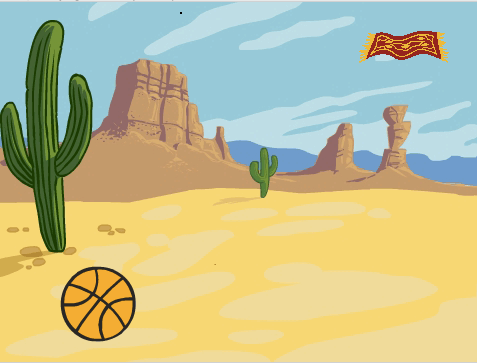
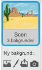
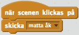
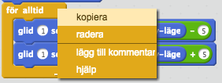
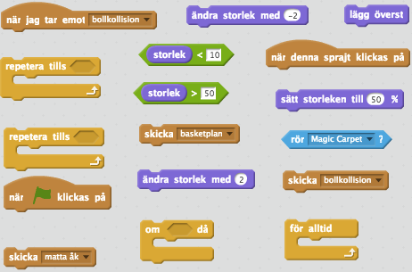
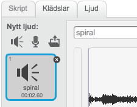
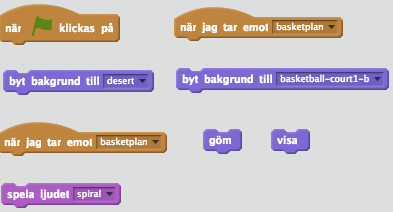
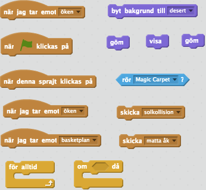

Magisk matta
I denna uppgift ska du få skapa en magisk matta som kan flyga till olika spännande platser! Du får själv välja vad som händer på de olika platserna, och du skapar på så sätt en interaktiv berättelse. Du kommer att använda meddelanden för att få olika delar av berättelsen att prata med varandra.
Ett exempel på hur spelet kan se ut ser du här: https://scratch.mit.edu/projects/116594645/

1: Sätt upp en scen och sprajtar
Skapa ett nytt projekt och ta bort katten.
Välj en ny bakgrund från biblioteket. Välj en plats som du tycker passar för en magisk matta, här i exemplet använder vi Desert.
Lägg till sprajten Magic Carpet
Flytta mattan så att dess y-värde är mer än 100.
Förminska den med förminskningsverktyget (). Ungefär 10 gångers förminskning är lagom.
Gå in på scenen och lägg till en bakgrund. Välj en till bakgrund, som ska vara platsen dit mattan åker, här i exemplet har vi valt en basketplan.
Lägg till en sprajt som flygande mattan behöver nudda för att kunna åka till en annan plats. Här i exemplet har vi valt Basketball, eftersom mattan ska åka till en basketplan.
Den nya sprajten ska ligga på marken så se till att dess y-värde är mindre än 0.
2: Få mattan att sväva och åka
Nu ska du koda så att mattan rör sig upp och ned om och om igen, så att det ser ut som att den svävar i luften. Sedan ska du koda så att mattan åker dit på scenen som du klickar med musen. Hur kommer mattan veta att användaren har klickat på bakgrunden? Svaret är MEDDELANDEN, vilket är ett sätt att kommunicera mellan olika delar av koden. Scenen kommer skicka ut ett meddelande som mattan lyssnar på. Fiffigt va?
Klicka på scenen i nedre vänsta hörnet så att den markeras. Skapa ett skript för scenen som gör att när den klickas på så skickas meddelandet ”matta åk”

Skapa ett skript för mattan som säger:
Startar när START klickas på
Gå till x: y:. Ange dina startkoordinater, t ex x: 165, y: 135
För alltid:
Glider under 1 sekund till X:samma som förut, Y:samma som förut minus 5
Glider under 1 sekund till X:samma som förut, Y:samma som förut plus 5
Skapa ett till skript för mattan som säger:
Startar när den tar emot meddelandet ”matta åk”
Stoppa andra skript i sprajten
Glider under 1 sekund till X och Y-position för musen
Sedan ska mattan för alltid glida upp och ner igen. Återanvända koden du skapade ovan i punkt 2!
Tips: För att återanvända kod kan du högerklicka på ett kodblock och välj kopiera: 

Testa programmet! Glider mattan upp och ner? Vad händer om du klickar på bakgrunden?
3: Byta bakgrund när mattan rör bollen
Nu ska du koda så att mattan åker till basketplanen när den åker in i basketbollen. Då behöver du kod som upptäcker en KOLLISION, det vill säga om mattan krockar med basketbollen.
Skapa ett skript för basketbollen som säger:
Skapa sedan ett till skript för basketbollen som säger:
Skapa ett skript för mattan som säger:
Startar när den tar emot meddelandet ”bollkollision”
Repetera till mattans storlek är mindre än 10:
Ändra storleken med -2
Skicka meddelande ”basketplan”
Repetera till mattans storlek är större än 50:
Ändra storleken med 2
Ändra skriptet för mattan som utförs när START klickas på, så att den sätter storleken till 50%. Då har mattan en lagom storlek i början av spelet.
Ändra också så att mattan läggs överst i början av spelet. Annars kan det hända att den blir gömd bakom basketbollen.

Här är de block som behövs för punkterna 1 till 5. Tänk på att vissa ska användas till skript för basketbollen och vissa ska användas till skript för mattan.
Testa programmet! Vad händer när du klickar på bollen?
4: Ljudeffekter
För att göra det lite roligare ska vi lägga till ljudeffekter.
Nu kan du lägga till en ljudeffekt när mattan åker in i bollen. Gå till mattan och klicka på ljud-fliken. Lägg till ljudet "Spiral"

Sätt in ljudblocket på rätt ställe så att det spelas när mattan far in i bollen. Testa dig fram för att se vart det passar bäst att placera ljudet.
Nu är det dags att byta bakgrund och dölja basketbollen:
Skapa ett skript för scenen som säger:
Skapa ett skript för scenen som ser till att bakgrunden är Öken (desert) när START klickas på.
Skapa ett skript i basketbollen som gömmer sprajten när den tar emot meddelandet ”basketplan”
Skapa också ett skript i basketbollen som visar sprajten när START klickas på.

Testa! Fungerar ljuden? Nu har du kodat ett enkelt program med en magisk matta som kan åka till en basketplan!
5: Åka tillbaka till öknen
Det sista du ska få koda är att göra så att mattan kan åka tillbaka till öknen. Då behöver du en ny sprajt att klicka på.
Lägg till en sprajt som flygande mattan ska nudda för att kunna åka tillbaka till öknen (eller den bakgrund du valt). Här i exemplet har vi valt Sun.
Skapa ett skript för den sprajten som säger:
Skapa ett till skript för solen som säger:
Skapa ett tredje skript för solen som ser till att solen göms när den tar emot meddelandet ”öknen”
Till sist skapa ett skript för solen som visar den om den tar emot meddelandet ”basketplan”
Klicka på scenen och skapa ett skript där som säger:
Skapa ett skript för mattan säger:
Startar när den tar emot meddelandet ”solkollision”
Spela ljudet ”spiral”
Repetera till mattans storlek är mindre än 10:
Ändra storleken med -2
Skicka meddelande öken
Repetera till mattans storlek är större än 30:
Ändra storleken med 2
Tips: Detta är nästan samma skript som händer när den tar emot meddelandet ”bollkollision”. Du kan därför kopiera den koden om du vill och göra de nödvändiga ändringarna.

Testa spelet! Kan du åka tillbaka till öknen genom att klicka på solen?
Är basketbollen försvunnen i öknen? Varför? Kan du fixa det? Tips: använd meddelandet "öken".
Färdig!
Grattis, nu har du gjort klart uppgiften.
Glöm inte att spara ditt projekt! Döp det gärna till uppgiftens namn så att du enkelt kan hitta den igen.
Testa ditt projekt
Visa gärna någon det som du har gjort och låt dem testa. Tryck på DELA för att andra ska kunna hitta spelet på Scratch. Gå ut till projektsidan och låt någon annan testa spelet!
Utmaningar
Nu är det upp till dig att bestämma vad du vill ska hända på de olika platserna! Hitta på egna berättelser med sprajter som du själv väljer. Få dem att röra sig, säga saker eller låta. Kanske ska du leta efter något på de olika platserna? När du hittar det och klickar med musen, åker mattan till nästa plats!”
Frågeställningar